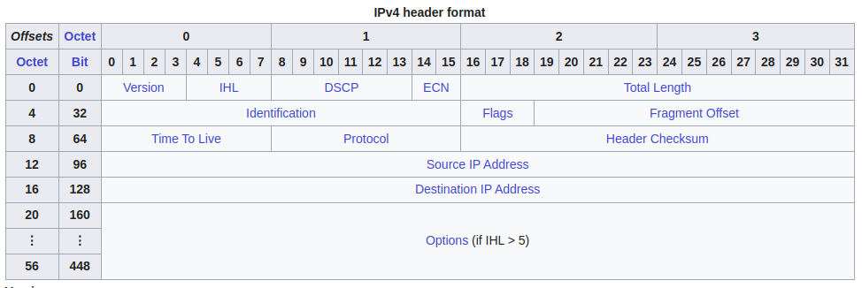
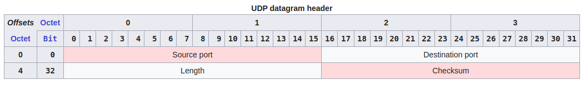
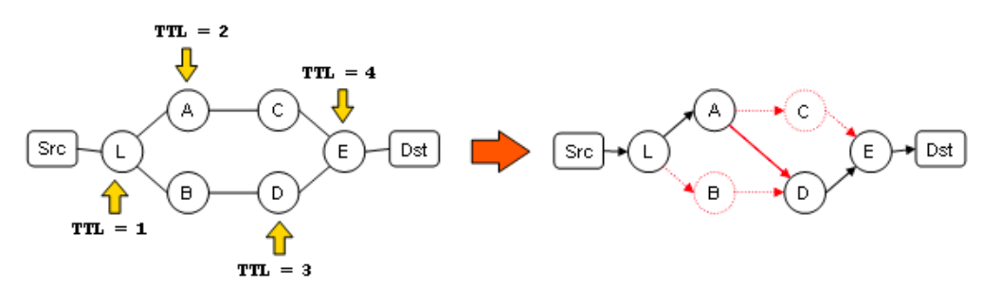

Traceroute or 'tracert' (on windows systems) is a linux command line tool by which the path from origin IP address to the destination IP address through intermediate hops (routers or switches or any device forwarding the packet) can be known. It is mostly used by network engineers to configure the path that a certain packet takes, so that they can improve the latency or the time to serve.
Traceroute works mainly by manipulating the TTL (time to live) value present in the header of IP. Inititally, an ICMP packet with TTL value set to 1 is sent into the network. After reaching the first hop, the TTL value becomes 0. Every hop in the path of a packet decrements the TTL value by 1. The first hop then sends a ICMP Time Exceeded message to the origin IP address (determined from IP headers). The traceroute on the origin IP then determines the IP address of the hop from where the Time exceeded message was received. This process conitnues with TTL values incrementing by 1 until the destination is reached. Additionally, traceroute also determines the number of hops between source and destination, the response times of each hop and also if a packet is lost between the source and destination.
As I said earlier, traceroute works by manipulating the TTL value present in the header of a IP message. There are two versions of IP addreses used these days - IPv4 and IPv6. For simplicity, we will only look at IPv4 headers. Let's have a look at a sample IPv4 header -
Notice the Time To Live field from bits 64 to 71.
This IP message acts as a payload and is attached with a ICMP header. Here's what a Internet Control Message Protocol (ICMP) header looks like -
The 'type' field of this header can house 255 different types (as the size is 8 bits long!). Mainly, on Windows systems, an ICMP Echo Reply message (Type - 0; Code - 0) is sent by default. But on Unix-like systems, the default protocol using which traceroute send the first message is UDP. Let's look at the UDP datagram header too -
The destination port numbers here ranges from 33434 to 33534.
Now, when at a router or switch, the TTL value becomes 0 due to successive decrements by previous router, it sends a ICMP Time Exceeded message. The 'Type' value of this type of message is 11 and there are two values of codes -
The traceroute program on the source computer then determines the destination IP address from the IP header embedded within the payload of the ICMP message. In this way it builds a chain of addresses that the packet takes on its way to the destination.
This process continues with TTL values incremented by 1 on each turn, until the destination is reached and a ICMP Destination Unreachable message (the TTL value becomes 0 on reaching the destination) is received in case of UDP packets or ICMP Echo Reply message is received incase of ICMP Echo packets.
The timestamp values returned for each router along the path are the delay (latency) values, typically measured in milliseconds for each packet.
The sender expects a reply within a specified number of seconds. If a packet is not acknowledged within the expected interval, an asterisk is displayed. The Internet Protocol does not require packets to take the same route towards a particular destination, thus hosts listed might be hosts that other packets have traversed. If the host at hop #N does not reply, the hop is skipped in the output.
So, this is how traceroute works! Phew!
Suppose the destination has a load balancer ahead of it in a network path. Let's understand this with the help of a diagram -
Here L is a load balancer in the network. Here, there is no longer a single route from Src to Dst. In the absence of a load balancer too, there may be multiple paths that can be taken to reach a destination from a source. In this case it suffers from two systematic problems: it fails to discover true nodes and links, and it may report false links.
By default, the original implementation of traceroute sends three probes per hop. It means it sends three messages to the destination every time. We can imagine a situation where the load balancer directs the packets to A from L all three times. Thus the links (L, B) and (B, D) will be left undiscovered.
The second problem, let's say the load balancer L directs the first packet to A. Thus the link (L, A) is established. Now in the second iteration, the load balancer directs the packets to B and as D is the only next-hop, the packet goes to D. And then as TTL becomes 0, a Time Exceeded message is sent back. Now the link (A, D) is established in the source traceroute program. This is a false link as no such link exists.
There is also a problem of firewalls in networks. As traceroute uses ICMP messages, it may be flagged as low priority by the firewall programs and thus can result in inaccurate or incomplete traceroute results. There are a number of other cons like limited support for non-IP protocols, DNS resolution delays, one directedness, etc.
To overcome the load balancer and multiple path problem, a newer implementation called Paris Traceroute was introduced. They used the sequence number field in case of TCP headers and checksum field in case of UDP headers to keep track of packets in per-flow load balancing. It is still inefficient in case of per-packet load balancing.
MTR is a combination of traceroute and ping which monitors the network over realtime. It is mainly used for diagnosing intermittent network problems.
It is also an exercise that I left for myself to come up with a better architecture of traceroute someday.
References -